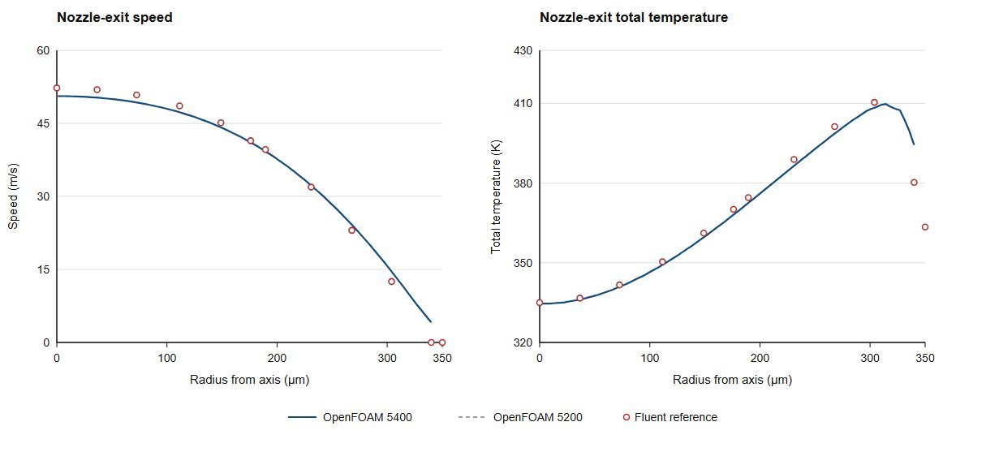
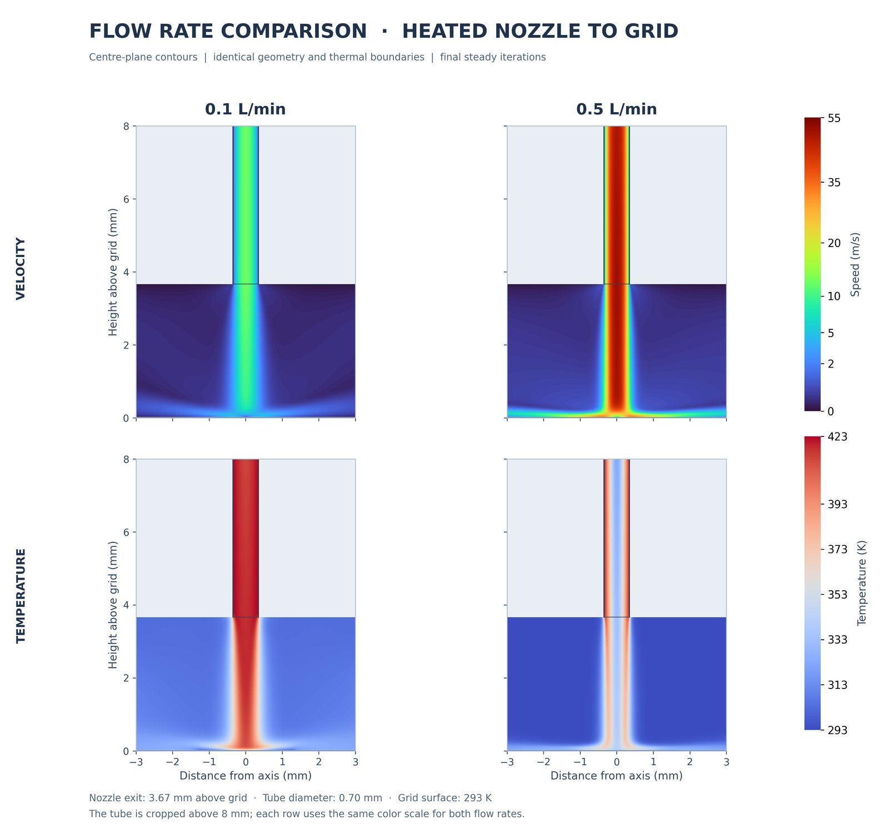
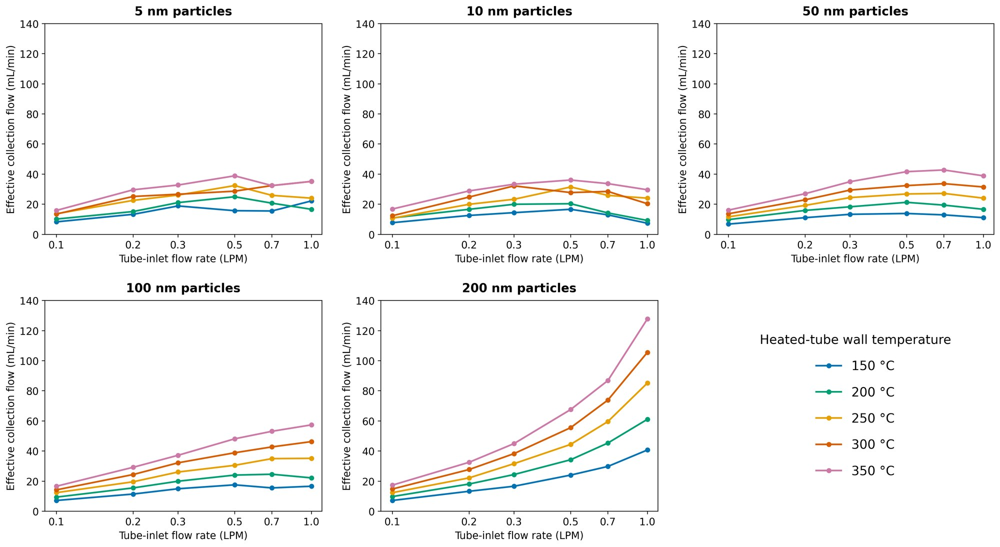
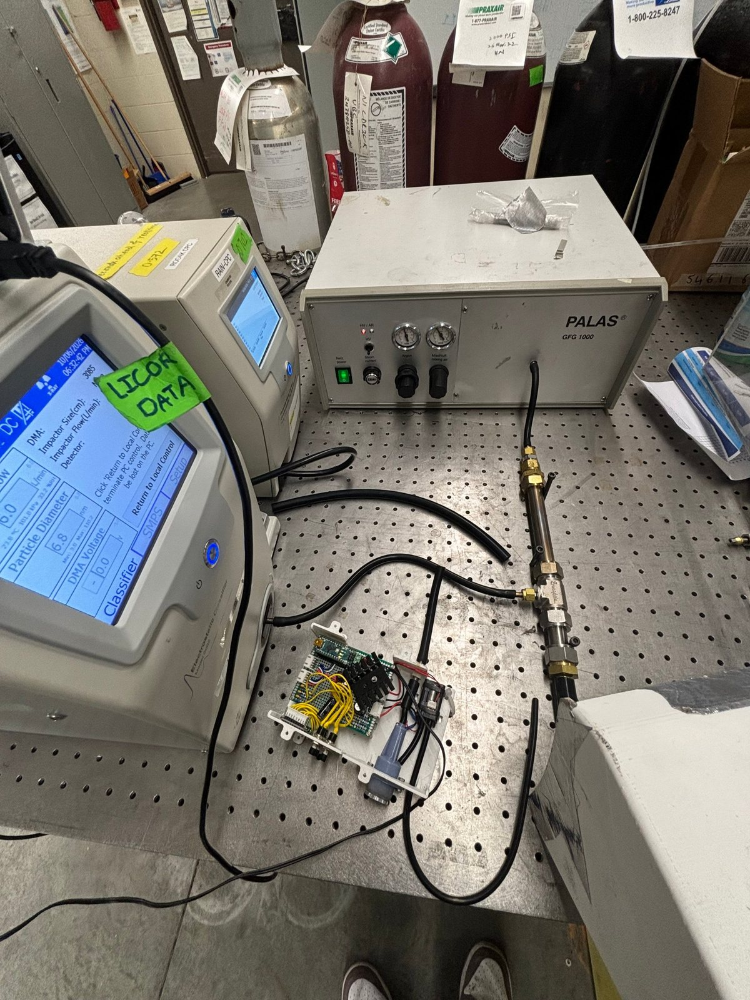
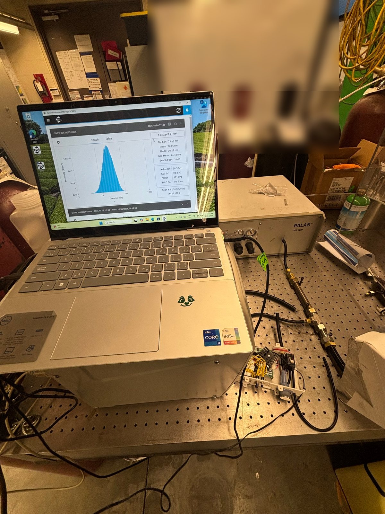
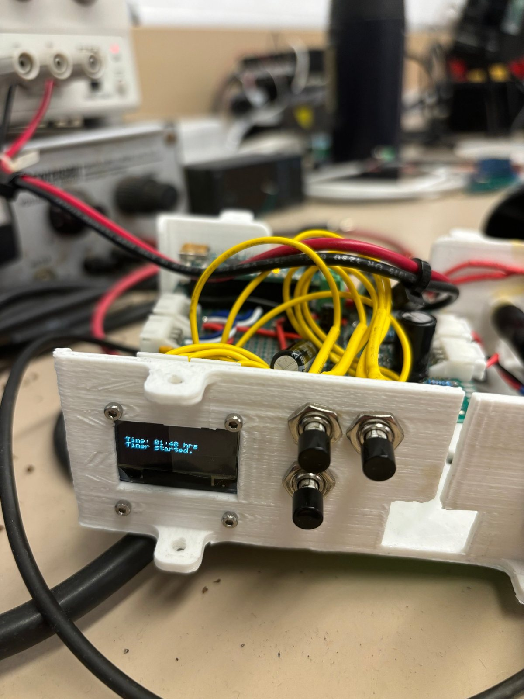
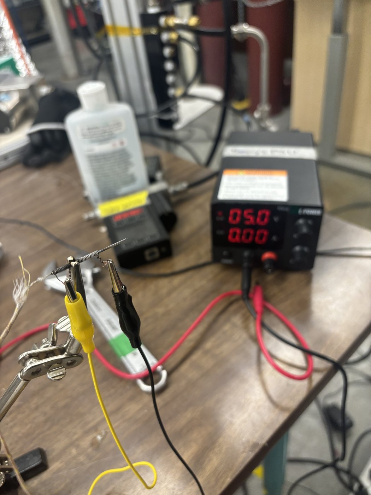
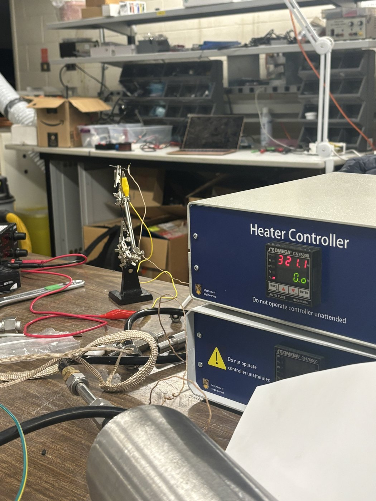

Thermophoretic Sampler
Experimental and computational validation of a TEM grid sampler
- Year
- 2026–27
- Context
- MECH 493 thesis project · UBC Energy & Aerosol Laboratory
- Tools
- OpenFOAM · CFD · SMPS · Spark-discharge aerosol · TEM · Arduino
Testing the UBC thermophoretic sampler against a known aerosol and an OpenFOAM model, as the first step toward a package that collects several TEM samples during one UAV flight.
Why
TEM is one of the most direct ways to see the shape of soot, but the particles first have to land on a TEM grid. A thermophoretic sampler (TPS) does this with a temperature gradient: a heated jet of aerosol hits a cool grid, and small particles drift from hot gas toward the cold surface. Aircraft and drones can sample where people can't reach, but one grid exposed for a whole flight gives one blended sample. I'm working toward a package that collects at least five separate samples in a single flight.
Phase 1 · CFD modelling
An OpenFOAM model of the sampler, used to predict how much of the incoming aerosol lands on the grid and which operating conditions maximize it. Shown in the order the work was done.
Jet and grid model, validated
I modelled the heated nozzle and grid region (0.70 mm tube, exit 3.67 mm above the grid) and checked its nozzle-exit speed and temperature profiles against an ANSYS Fluent reference, then compared flow rates of 0.1 and 0.5 L/min.


Particle tracking in the jet
Soot tracers released into the solved jet show where and why particles reach the grid.
Heated tube added
Nov 2026I connected the 25.4 mm heated tube upstream of the jet so particles are tracked continuously from the tube inlet to the grid, with Brownian motion and thermophoresis.
150-case collection-efficiency sweep
Nov 2026Particle diameters of 5–200 nm, flow rates of 0.1–1.0 L/min, and tube-wall temperatures of 150–350 °C. Efficiency peaks at low flow (about 17% at 0.1 L/min) and rises with wall temperature (350 °C beat 300 °C in 28 of 30 matched cases). Higher flow delivers more particles per minute, but the gain levels off for 5–10 nm particles.


Phase 2 · Experiments
Bench tests of the real sampler against a known aerosol, and hardware changes to reach the operating conditions the model recommends. Shown in chronological order.
Spark-discharge tests
Oct 2026A Palas GFG 1000 spark-discharge generator made the aerosol, an SMPS measured the reference size distribution (about 1.1 × 10⁷ particles/cm³, geometric mean 24.5 nm), and the sampler collected particles onto TEM grids using its own timer-controlled box.




First TEM grids
Oct 202610- and 20-minute samples collected plenty of aggregates on lacey carbon grids, but the deposit is not uniform, so grid counts alone can't give a reliable efficiency. The next tests will measure SMPS concentrations at both the inlet and the exhaust.


New heater wire
Nov 2026The simulations favour a hotter tube wall, so I bench-tested a new heating-wire length to see how hot it can run. The coil reached 321 °C, approaching the 350 °C target.



Next steps
- Compare the simulated collection efficiency with SMPS inlet/outlet measurements
- Add grid warming and seed-to-seed error bars to the simulations
- Settle the heater design and operating point (target 350 °C tube wall at 0.3 L/min)
- Design and prototype a multi-grid package for UAV sampling